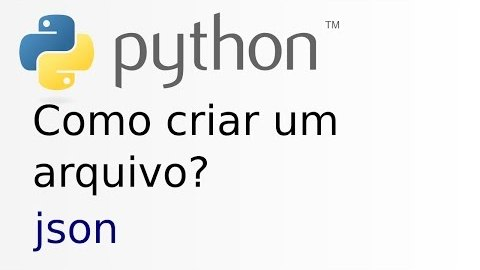
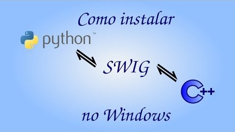
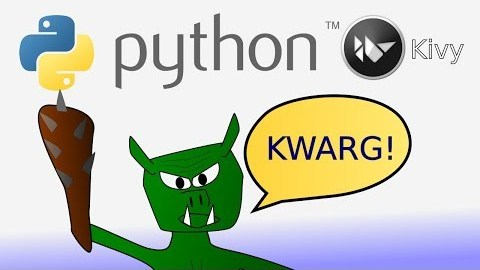
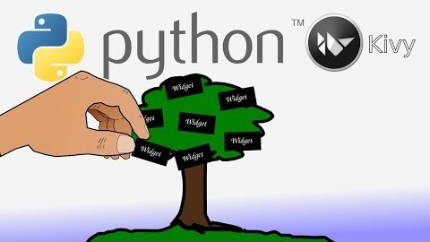
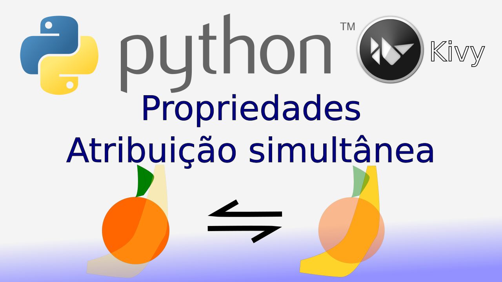

Nesta aula vamos ver o que será ensinado neste curso e o porquê utilizar a linguagem Python!
Curso de Python na Prática
Este curso é indicado para iniciantes na linguagem. O curso cobre desde os tópicos mais básicos até temas mais avançados como interfaces gráficas, aplicativos de celular e interfaces 3D.
Confira abaixo as aulas do curso e uma breve descrição do conteúdo abordado em cada aula.
Introdução ao curso
Primeiro programa em Python
Nesta aula você vai entender como mandamos as instruções para o computador e como ele as executa. Vai instalar o Python e fazer o seu primeiro programa!!
Instalação no Windows e primeiro programa
Processo de instalação do Python no Windows e o nosso primeiro programa, Hello World!
Chatbot - Input e concatenação
Esse aula explica as funções input e print e o conceito de concatenação. Esses conceitos são a base para criarmos um chatbot, que é um programa que conversa com o usuário.
Chatbot - If e else
Vamos aprender sobre as condicionais if e else e como utilizá-las no código do nosso chatbot.
Chatbot - Slicing in
Vamos aprender sobre a técnica de slicing para selecionarmos partes do conteúdo de uma variável e sobre o operador 'in'
Chatbot - While break
Nesta aula vamos aprender sobre repetições de código, começando pela declaração 'while' e pelo comando 'break'
Chatbot - For e lista
Nesta aula vamos aprender sobre outra técnica para repetição de código, que é utilizando a declaração 'for'. Vamos aprender também sobre um tipo de variável no Python chamada 'lista'.
Chatbot - Métodos das strings: upper, lower, title e replace
Nesta aula vamos aprender alguns métodos para tratar os textos no Python. Vamos utilizar os métodos upper, lower, title e replace para formatar os textos de entrada do nosso chatbot.
Chatbot - Como criar funções
Nesta aula vamos aprender a criar funções. Esta é uma maneira de agrupar certas sequências de código e evitar que você reescreva códigos múltiplas vezes.
Chatbot - Organização, comentários e import
Nesta aula vamos aprender a organizar o código para facilitar seu entendimento e futuras modificações. Vamos aprender a comentar o código para explicar certas partes dele e sobre o comando import.
Chatbot - Classes, self e __init__
Nesta aula vamos aprender sobre classes. Vamos também falar sobre o 'self' e o método '__init__' das classes. Vamos também abordar a convenção da nomenclatura dos arquivos.
Chatbot - Transformando o código em classe e utilização
Nesta aula vamos aprender a transformar o código sequencial em classe. Vamos implementar o código da aula anterios como classe e aprender a utilizar esta classe.
Chatbot - Criando um arquivo json

Nesta aula vamos aprender sobre os arquivos 'json' e como salvar variáveis armazenadas do nosso programa em um arquivo permanente.
Chatbot - Try e except
Nesta aula vamos aprender sobre as declarações 'try' e 'except' no Python. Vamos aprender sobres possíveis erros de execução e como contorná-los.
Chatbot - Dicionários
Nesta aula vamos aprender sobre uma nova maneira de armazenar informações no Python, que é utilizando os dicionários.
Chatbot - Usando Python em um programa Python!
Nesta aula vamos aprender a deixar nossos programas muito mais úteis, fazendo com que ele execute comandos Python!
Chatbot - Como abrir programas e arquivos externos

Neste vídeo ensino como executar programas do sistema operacional e abrir arquivos de extensões diversas com os devidos programas pelo Python. Para isso utilizamos o módulo 'sys' para identificar o sistema operacional, 'os' para executar programas e abrir arquivos no windows e o 'subprocess' no sistema GNU/Linux.
Telegram Bot - Como instalar pacotes externos
Neste vídeo ensino como instalar pacotes externos do Python no sistema GNU/Linux e no Windows. Vamos instalar o pacote 'telepot' para criarmos um bot do telegram, que é um programa de mensagens similar ao WhatsApp.
Telegram Bot - Utilizando APIs - Como criar um bot, receber e enviar mensagens com telepot
Nesta aula vamos aprender a utilizar APIs de pacotes, que é a maneira para utilizar as funções do pacote. Vamos aprender a usar a API do telepot, criar um bot no servidor do telegram e receber e enviar mensagens através da API do telepot.
Telegram Bot - Atribuição múltipla e argumentos opcionais
Neste vídeo ensino como integrar a classe de Chatbot ao telegram, como atribuir valores a múltiplas variáveis em uma linha e falo sobre argumentos opcionais nas funções do Python.
Telegram Bot - Resolução do desafio, implementação da memória e correção de erros
Neste vídeo vamos revisar algumas coisas que vimos, tirando dúvidas que algumas pessoas me enviaram. Vamos implementar a memória do chatbot para frases e arrumar alguns bugs do código. Depois mostro como resolver o desafio proposto do vídeo passado, fazendo o comando 'aprende' funcionar do telegram!
Reconhecimento de fala - With, SpeechRecognition e PocketSphinx
Neste vídeo vamos aprender sobre o 'with' no Python, instalar o 'swig' e os módulos necessários para reconhecimento de fala e implementar um reconhecedor de fala.
Como instalar o SWIG no Windows

Neste vídeo vamos instalar o SWIG no Windows. O SWIG é uma dependência do PocketSphinx, que é utilizado no reconhecimento de fala.
Sintetização e reconhecimento de voz em português - pyttsx, gTTS e setup.py
Vamos aprender como transformar um texto em voz e uma voz virar texto em inglês e português. Vamos, também, aprender uma alternativa para instalar módulos do Python sem o PIP.
Herança e Polimorfismo
Vamos aprender o que é herança e polimorfismo e como utilizar estes conceitos para implementar a sintetização de fala do nosso chatbot.
Super
Nesta aula vamos aprender sobre a função super do Python. Vamos utilizar ela para reaproveitar o código da classe de chatbots para implementar o nosso BotFalante, que vai reconhecer a nossa voz e falar, além de aprender e executar comandos de voz!
Kivy - Criando uma interface gráfica

Neste episódio vamos aprender a criar uma interface gráfica, utilizando a biblioteca (framework) Kivy.
Kivy - Associando Widgets

Neste episódio vamos aprender a inserir widgets e dispor eles na tela do nosso aplicativo.
Kivy - Eventos e variáveis da instância

Nesta aula vamos aprender a criar funções para os botões com os eventos do Kivy e aprender sobre as variáveis de instância.
Kivy - Linguagem Kivy

Nessa aula vamos aprender a linguagem Kivy para fazer os Layouts e a funcionalidade do nosso aplicativo!
Kivy - Layouts dinâmicos e KWARGS!

Nessa aula vamos aprender a criar layouts e inserir widgets dinamicamente! Vamos aprender também sobre os KWARGS!
Kivy - ScrollView e Size Hints

Nesta aula vamos aprender a criar layouts mais dinâmicos ainda! Vamos fazer uma barra de rolagem para mostrar conteúdos maiores do que a tela e aprender sobre size hints!
Kivy - Referências e remoção de widgets dinamicamente

Nesta aula vamos aprender a remover widgets dinamicamente pelo aplicativo e também sobre as diversas maneiras de referenciar widgets na linguagem KV!
Kivy - Adicionando Widgets Dinamicamente e TextInput

Nesta aula vamos aprender a adicionar widgets dinamicamente pelo aplicativo e também sobre um novo widget chamado TextInput!
Kivy - Múltiplas telas com ScreenManager

Nesta aula vamos aprender a adicionar múltiplas telas ao nosso aplicativo utilizando o ScreenManager.
Kivy - Criando um menu com imagem

Nesta aula vamos aprender a criar um menu com imagem! Vamos ver outras propriedades do BoxLayout e usar o widget Image!
Kivy - Android Action bar

Nessa aula vamos aprender a criar uma Action Bar parecida com a do android no Kivy. Este vídeo é um dos vídeos de preparação para exportar nosso aplicativo para plataformas mobile como o Android.
Kivy - Usando o botão de voltar do Android

Nessa aula vamos aprender a usar o botão de voltar do Android em nosso aplicativo. Vamos aprender também a utilizar os eventos das telas e comandos do teclado.
Kivy - Como gerar um APK
Nessa aula vamos aprender a utilizar o Buildozer, um programa para facilitar a criação de aplicativos mobile (móveis) gerando os instaladores para as plataformas específicas. No vídeo mostro como gerar o APK, que é o instalador para a plataforma Android!
kivy - Usando buildozer para instalar e debugar

Nessa aula vamos aprender a utilizar o Buildozer para realizar o ciclo básico de desenvolcimento: Compilar, Transferir, Instalar, Testar e Debugar.
Kivy - Canvas e instruções gráficas

Nessa aula vamos aprender a modificar o visual dos aplicativos no Kivy. Vamos aprender sobre o canvas e algumas instruções gráficas!
Kivy - Classes dinâmicas e customização

Nessa aula vamos aprender sobre classes dinâmicas na linguagem KV e a criar widgets customizados. Vamos aprender também mais uma instrução gráfica e mais sobre o canvas!
Kivy - Customização de widgets pelo Python

Nessa aula vamos aprender a criar widgets customizados utilizando a linguagem Python.
Kivy - Propriedades e atribuição simultânea

Nessa aula vamos aprender como criar e usar as propriedades no Kivy. Vamos também aprender sobre as atribuições simultâneas no Python.